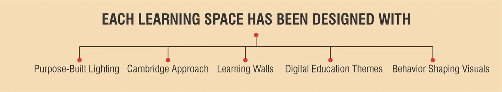
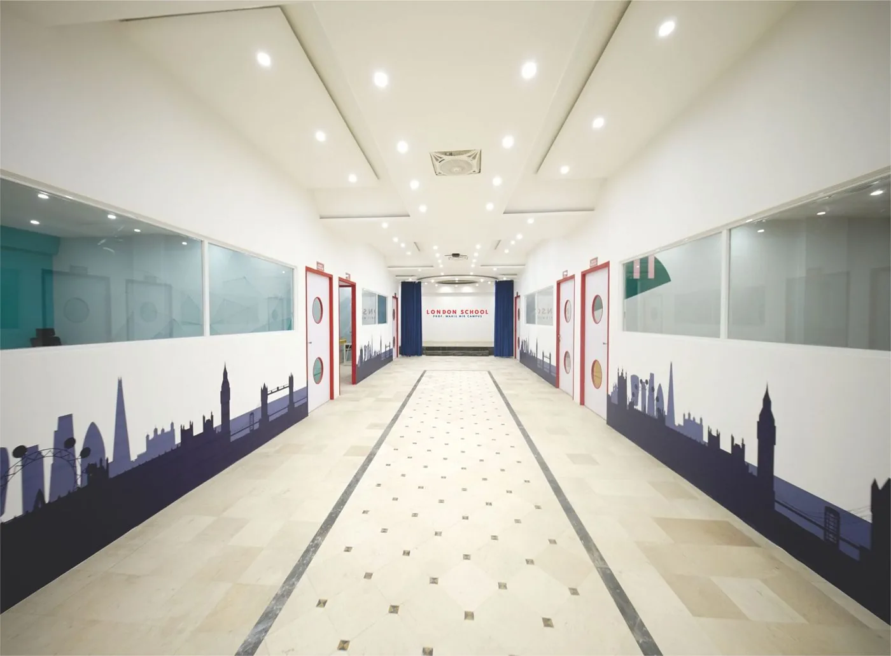
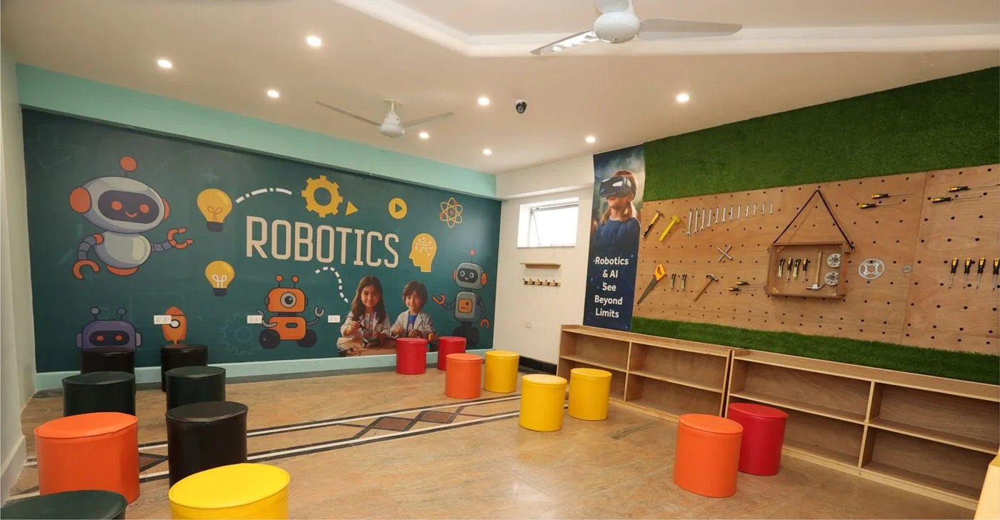

Renowned Journalist Hamid Mir Inaugurates London International School Campus
In a historic moment for education in Lahore, celebrated Pakistani journalist and media personality Hamid Mir formally inaugurated the Prof. Waris Mir Campus of London International School. His presence underscored the school's commitment to excellence and its deep roots in the community.
Ask for Details
Admissions 2026–27 Now Open
Admissions for the 2026–27 academic year are open for Pre-Nursery to Class 7. Class 8 launches in 2026–27 as our oldest cohort progresses. Book a free campus tour and see why families across Lahore are choosing London International School for their children.
Learn More
Annual Cultural Day Celebration
Students across all grades celebrated the diversity of cultures at London International School. Dressed in traditional attire from around the world, children shared stories, food, and traditions. A colourful reminder of what makes our community special.
View Photos
Step Inside: Virtual Campus Tour Launches
Can't visit in person yet? Explore London International School from anywhere in the world. Our new virtual tour gives you a 360° walkthrough of every classroom, lab, and facility. Perfect for families planning ahead.
Take the Tour
Robotics Lab Expansion Complete
We're thrilled to announce the opening of our expanded Robotics Lab! New Arduino kits, 3D printers, and a dedicated project space now give every student the tools to build, experiment, and innovate. Welcome to the future of making.
Explore Campus